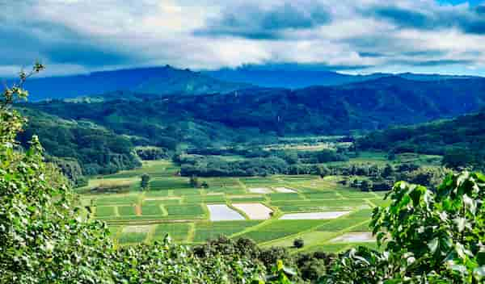
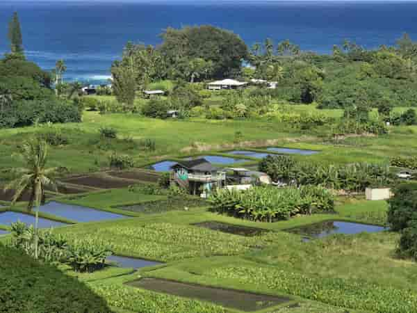
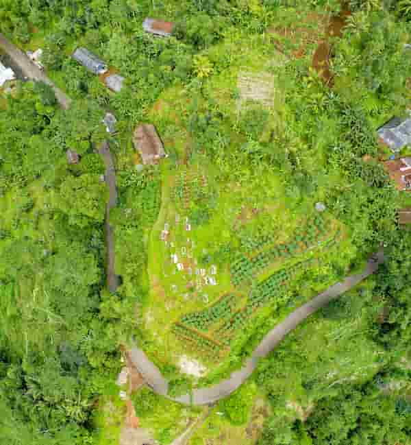

Ka Papa Loʻi o Kānewai
2645 Dole St.
Honolulu, HI 96822
Located at UH Mānoa with community workdays on the first Saturday of every month.
The best way to learn about kalo is to get your hands in the mud. Below you'll find organizations with volunteer opportunities to work in loʻi across Oʻahu, tips for beginners, educational resources, and links to learn more. Many offer regular volunteer days. Please check their websites or contact them directly for up-to-date information.

2645 Dole St.
Honolulu, HI 96822
Located at UH Mānoa with community workdays on the first Saturday of every month.

53-270 Kamehameha Highway
Hauʻula, HI 96717
Nestled on the windward side, community service days are on the third Saturday of every month.

46-406 Kamehameha Highway
Kāneʻohe, HI 96744
Come care for Heʻeia's wetland fields throughout the week on Monday, Tuesday, Wednesday, and Friday.